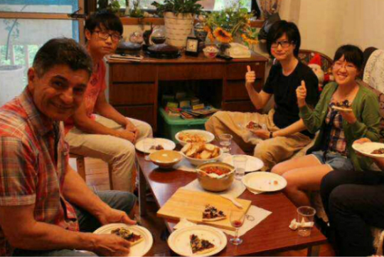
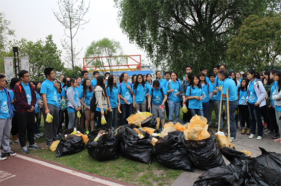
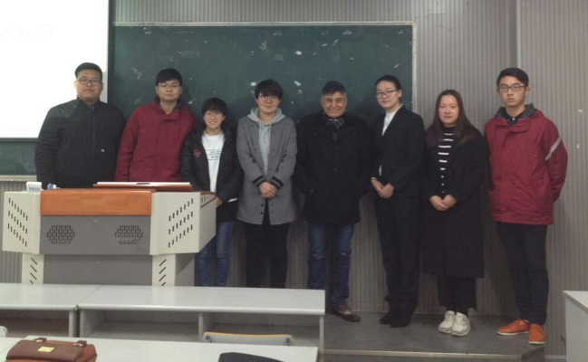

2015年
-
05.11
- 母亲河·母亲节成立！ 在2015年母亲节（5月10日）的第二天，几个志同道合的小伙伴在南大外教Tony的鼓舞下，一同设立了母亲河·母亲节这个公益组织，为了洁净的河流与致母亲。 
-
05.222015
- 南京市政府点头了 经初步交谈，该项目获得了南京市政府的许可与支持
-
06.082015
- 南京大学团委也点头了 获得南京大学团委的许可，南大团委表示愿意提供志愿者等支持
-
07月2015
- 网站建设紧张开展中 网站建设负责人及成员利用暑假时间进行网站的设计以及建设，别忘了我们还是学生~
-
10月2015
- 组织雏形初成 母亲河·母亲节除顾问以及主席外还设有对外联系、政府联系、网站设计维护、文书编辑、校际联络、清理区域管理、资金流动记录、会议记录、媒体联络、志愿者招募、宣传设计等十余个部门。
-
12.102015
- 网站正式上线 经过近6个月的努力，母亲河·母亲河从无到有，渐渐壮大。而在2015年12月10日这一天，我们的网站正式上线，为母亲河·母亲节又立了一块里程碑！
2016年
-
04.262016
- 清理区域最终敲定 清理区域最终敲定！综合多方面的考虑，秦淮河与长江交汇口最终被敲定为清理区域。
-
05.072016
- 首届母亲河·母亲节河岸清理公益活动圆满结束! 2016年5月7日上午9时30分，将近200名志愿者齐聚秦淮河畔，穿着统一志愿服装的他们构成了一片蓝色的海洋。在分发好清理工具后，在Tony的一声令下，所有志愿者井然有序地跟随着小组长向各自负责的清理区域出发。到达了各自的清理区域后，所有志愿者都非常卖力，当然我们的宗旨是安全第一，一切活动都有条不紊地进行。期间江苏电视台的记者还亲临现场对母亲河·母亲节进行了报道，并于当晚的江苏公共频道的新闻360播送了我们的活动。上午12点左右，活动进入尾声，所有志愿者将清理的垃圾聚集在一起，有15大袋之多（还有部分大件难移动的垃圾留在了显眼的草地上，待环卫工人用专业工具来处理）！所有志愿者齐聚一起进行合影留念，活动至此圆满结束！感谢所有志愿者辛勤无私的奉献！期待你们下次再来参与喔！也希望还没加入的你们关注我们的微信公众号，加入我们下一次的活动！ 
-
11.052016
- 参与南青优秀志愿者项目展示 2016年11月5日，“母亲河·母亲节”项目参与了“青春南行路”南青优秀志愿项目展，以照片墙、宣传单和视频的形式向南京大学全校师生展示了“母亲河·母亲节”项目的成员和志愿者在过去一年中为清理河岸做出的努力。此次展示也“母亲河·母亲节”项目之后的新成员招募做足了宣传。
-
12.052016
- 与南京科技职业学院达成合作 2016年12月5日，Tony带队母亲河·母亲节项目组成员前往位于江北新区的南京科技职业学院商讨“母亲河·母亲节”项目的合作问题，在这所学校的环境协会——寸草环保协会建立项目分部。我们进行了约十分钟项目介绍，包括开展项目的目的、原因，以及执行情况。该协会十分支持“母亲河·母亲节”项目，并承诺尽快成立项目组，参与2017年清理河道公益活动。
2017年
-
01.032017
- 与南京旅游职业学院达成合作 2017年1月3日，Tony老师与彭诗语前往南京旅游职业学院与该学校老师及学生商谈母亲河母亲节项目合作事宜，最后双方达成共识，准备合作举办河岸清理活动。 
-
04.15-192017
- 2017年度母亲河·母亲节河岸清理公益活动圆满结束! 470余名来自南京大学、南京科技职业学院和南京旅游职业学院的各院系、各年级的“清流志愿者”，在“母亲河·母亲节”环保公益项目的组织下，来到长江边，用最朴素的方式清理江岸垃圾，身体力行自己对长江的一份热爱，对环保的一份担当。
2018年
-
03.162018
- 2018年活动首次例会 3月16日：清流协会开展2018年活动首次例会，指导老师Tony Sansotta组织动员，开启2018年“母亲河·母亲节”清流活动。启动消息传遍南京其他8所高校，引起强烈反响。
-
- To be continued... 2018，相信有你的加入会更好！